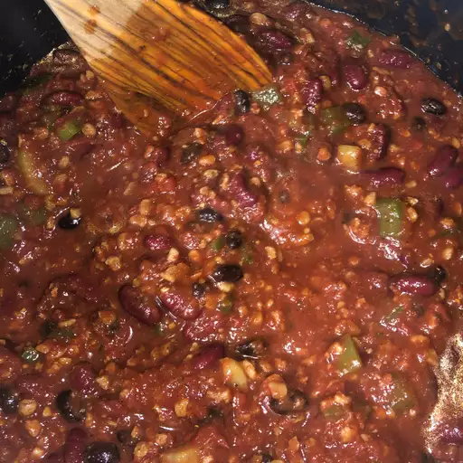

Back to index
The Best Veggie Chili!

Description:
Loaded with healthy veggies and plant-based "meat", this vegetarian chili recipe is as satisfying as it is delicious.
Ingredients:
- Onion cooked in olive oil
- Dried oregano, salt, ground cumin, bay leaves, fresh garlic, chili powder, ground black pepper
- Fresh onion, celery, green bell peppers, and jalapenos
- Canned green chili peppers, whole peeled tomatoes, kidney beans, garbanzo beans, black beans, and whole kernel corn
- And finally, vegetarian burger crumbles
Directions:
- Season and cook the onion until tender, then stir in the fresh veggies.
- Add the vegetarian crumbles and simmer.
- Stir in the remaining ingredients (sans corn), boil, then simmer for 45 minutes.
- Stir in the corn and cook for 5 more minutes.
- Top with shredded cheese, sour cream, or anything real!
- Serve and enjoy!